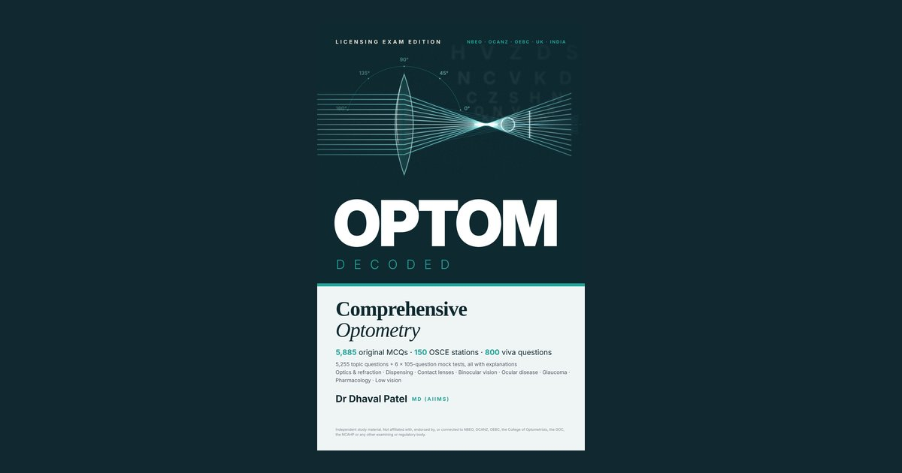

OptomDecoded Free Sample Mock 1: 50 Optometry Licensing Exam MCQs from the Book
For: Optometrists
Last updated: November 2026
A free 50-question optometry mock taken from OptomDecoded: Comprehensive Optometry, the licensing exam question bank by Dr Dhaval Patel. It uses the odd-numbered questions (1 to 99) of the book's Mock Test 1, so it samples the whole syllabus: optics, dispensing, contact lenses, binocular vision, ocular disease, pharmacology, low vision and practice.
- Format: four options, single best answer, 50 minutes (about one minute per question, as in the book's full mocks).
- Results by topic, so you can see which chapters to revisit.
- After each answer: the explanation, why the other options are wrong, and a one-line pearl, exactly as in the book.

New for optometrists: OptomDecoded
5,885 original MCQs, 150 OSCE stations and 800 viva questions for optometry licensing exams (NBEO, OCANZ, OEBC, UK and India), every option explained with a "why not" and a pearl.
After the test
The full book has 6 complete mock tests of 105 questions, 5,255 topic questions, 150 OSCE stations and 800 viva questions. See OptomDecoded.
More OptomDecoded sample mocks: Sample mock 2 · Sample mock 3 · Sample mock 4. Other optometry mocks: B.Optom, NBEO-style, OCANZ-style and Gulf licensing, or all mock tests.
Original questions written for revision. Not affiliated with NBEO, OCANZ, OEBC, the College of Optometrists, the GOC, the NCAHP or any other examining body.
How to cite this page
Patel D. OptomDecoded Free Sample Mock 1: 50 Optometry Licensing Exam MCQs from the Book. RPC Rounds (Sadbhaav Eye Clinic). Updated November 2026. Available at: https://www.sadbhaavclinic.com/optom-decoded-sample-mock-test-1.html. Accessed [date].
Looking for an eye specialist in Ahmedabad? Learn about our Eye Department or book a consultation with Dr. Dhaval Patel.